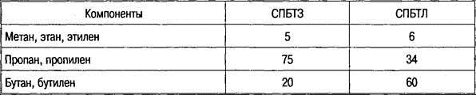

Тема 5
Альтернативные виды
топлива
Классификация
альтернативных топлив
Так как мировой запас нефти уменьшается,
ведутся работы по созданию топлив ненефтяного происхождения, или так называемых
альтернативных топлив, к которым относят все автомобильные топлива кроме
бензинов и дизельных топлив.
Классификация альтернативных топлив
Газовые топлива делятся на
низкокалорийные, среднекалорийные и высококалорийные.
К низкокалорийным топливам относится
доменный газ (из 1 м3 газа получают 10000 кДж теплоты).
К среднекалорийным топливам относятся
коксовый и светильный газы (из 1 м3 газа — 10 000—20 000 кДж
теплоты).
К высококалорийным топливам относятся
природный (35 000 кДж), нефтяной сопутствующий (45 000 кДж), сжиженный (46 000
кДж), крекинговый (50 000 кДж).
Сжиженные нефтяные газы
Сжиженные нефтяные газы получают как
побочный продукт при деструктивной переработке нефти (около 30 % от выхода
бензина) и нефтяного газа. Состоят они из пропан-бутановых фракций.
По сравнению с бензином сжиженный газ
имеет следующие преимущества:
— в 1,5—2 раза дешевле;
— более высокая детонационная стойкость
(ОЧ = 105);
— двигатель на нем работает мягче,
ресурс увеличивается примерно в 1,5 раза;
— срок службы моторного масла возрастает
в 1,5—2 раза;
— практически не содержит серы, которая
вызывает коррозию деталей и их износ;
— снижает токсичность отработавших газов
(окись углерода — в 2 раза, окислы азота — в 1,2 раза, углеводороды — в 1,3—1,9
раза);
— не накапливаются смолистые отложения,
так как нефтяной газ растворяет их.
При нормальном атмосферном давлении и
температуре окружающей среды выше О °С сжиженный газ находится в газообразном
состоянии, но при небольшом повышении давления (до 0,8—1,6 МПа) переходит в
легкоиспаряющуюся жидкость.
При переводе двигателя на сжиженный газ
мощность падает на 3—4 %. Этого можно избежать, если смесь охлаждать во
впускном тракте или повысить степень сжатия, так как октановое число у газа
больше, чем у бензина. Лучше всего использовать высокую детонационную стойкость
газа путем увеличения угла опережения зажигания.
ГОСТ 20448—90 предусматривает выпуск
двух марок сжиженного газа: СПБТЗ (пропан-бутановая смесь техническая зимняя) и
СПБТЛ (пропан-бутановая смесь техническая летняя).
Таблица 1. Процентное содержание по
массе компонентов сжиженных газов, %, не более

Метан, этан, этилен имеют высокое
давление насыщенных паров, в то время как у сжиженных газов оно не более 1,6
МПа при температуре 40 °С. Добавление этих углеводородов в небольшом количестве
повышает давление насыщенных паров смеси, что обеспечивает бесперебойную работу
двигателя.
Чтобы масса газобаллонной аппаратуры
была небольшой, давление насыщенных паров должно быть минимальным, но для
надежной подачи газа необходимо, чтобы давление газа в баллоне было не менее
0,1 МПа.
Пропан обеспечивает оптимальное давление
насыщенных газов.
Бутан — наиболее калорийная и легко
сжимаемая часть топливной смеси.
Для создания давления насыщенных паров
баллон заправляют не более чем на 90 %.
Для пуска холодного двигателя
используется содержимое из верхней части баллона (где находится паровая
подушка). После прогрева двигателя топливную систему переключают на жидкую
фазу, так как интенсивность испарения оказывается недостаточной. Причина —
падение температуры в баллоне при испарении.
Кроме того, если бы в баллоне не было
паровой подушки, то из-за большого коэффициента объемного расширения газа
давление в баллоне с увеличением температуры значительно возрастало бы. При
росте температуры на 1 °С давление возрастает на 0,7 МПа.
Сжиженные газы не имеют запаха, но для
обнаружения утечек вводят специальные пахучие вещества — одоранты.
Сжатые газы
Сжатые природные газы по сравнению с
сжиженными нефтяными газами имеют следующие преимущества:
— более безопасны, так как легче воздуха
и при утечках улетучиваются;
— дешевле;
— больше природных запасов;
— отработанные газы экологически чище.
Сжатые газы при нормальной температуре
сохраняют газообразное состояние даже при высоком давлении. В жидкое состояние
они переходят при температуре ниже —82 °С и давлении 4,5 МПа. Основной
компонент — метан, присутствуют и другие углеводороды, а также углекислый газ,
кислород, азот, вода, механические примеси.
Природные месторождения газа содержат
метана 82—98 %, этана до 6 %, пропана до 1,5 %, бутана — до 1 %.
В попутных газах нефтяных месторождений
содержится: метана 40—82 %, этана и пропана 4—20 %.
Природный газ производится двух марок: А
и Б, которые отличаются содержанием метана и азота.
По энергетическим параметрам 1 м3 сжатого
природного газа приравнивается к 1 л бензина.
Главным недостатком газобаллонной
аппаратуры для сжатых газов является ее масса. Баллон из легированной стали
емкостью 50 л с газом под давлением 200 МПа весит 62,5 кг, а баллон из
углеродистой стали — 93 кг. Полная заправка 8 баллонов, масса которых
составляет 14 % грузоподъемности автомобиля, обеспечивает 200—280 км пробега.
При замене бензина на сжатый природный
газ мощность двигателя падает на 18—20 %, скорость — на 5—6 %, время разгона
увеличивается на 24—30 %.
Способ повышения эффективности
применения сжатого природного газа состоит в увеличении степени сжатия до 10, повышении
коэффициента наполнения цилиндров двигателя путем увеличения диаметра впускного
трубопровода, устранении подогрева газа на впуске, изменении фаз
газораспределения. Все это требует конструкционных переделок двигателя, но
запасы природного газа столь значительны по сравнению с нефтью, что делают
перспективным его использование. Уменьшить массу баллонов можно путем сжижения
газа при низких температурах (—160 °С) и хранении его в изотермических
баллонах.
По энергоемкости такой газ может
сравниться с жидким нефтяным топливом.
При создании надежных и дешевых
криогенных топливных баков и сети заправочных станций возможно увеличение парка
автомобилей, работающих на сжиженном природном газа.
Газоконденсатные
топлива, спирты и водород
Газоконденсатное топливо — это природная
смесь легкокипящих нефтяных углеводородов, находящаяся в природе в газообразном
состоянии под давлением 4,9—9,8 МПа при температуре 150 °С. При охлаждении и
снижении давления до атмосферного (в условиях земной поверхности) смесь
распадается на жидкую (конденсат) и газовую составляющие.
Газоконденсатное топливо обладает низкой
детонационной стойкостью и в основном используется в качестве дизельного
топлива марок ГШЗ и ГШЛ.
ГШЗ — газоконденсатное широкофракционное
топливо, получают на Севере прямой перегонкой газового конденсата или путем
смешивания дизельных фракций газового конденсата с дизельным топливом,
используют при температуре окружающей среды —35 °С и выше.
ГШЛ получают в Средней Азии прямой
перегонкой газового конденсата или путем смешивания дизельных фракций газового
конденсата с товарными дизельными топливами, применяют при температурах
окружающей среды выше —5 °С.
Спирты относятся к числу синтетических
топлив, из которых наиболее известны метанол и этанол.
Метанол — метиловый или древесный спирт.
Сырьем служат природный газ и нефтяные остатки. Синтез проводится под давлением
25—60 МПа в присутствии катализаторов при температуре 300—400 °С. Его стоимость
превышает в полтора—два раза стоимость бензина. Применение метанола требует
изменения конструкции двигателя, так как ухудшается пуск двигателя при низких
температурах.
Добавка 3—5 % метанола позволяет
использовать бензин с меньшим октановым числом и заменять этилированный бензин
на неэтилированный. Использование метанола в чистом виде возможно в южных
широтах и широтах с умеренным климатом.
Добавка 15 % метанола вызывает
образование паровых пробок.
Этанол — этиловый или винный спирт
вырабатывается из злаков, картофеля, сахарного тростника и др., применяется как
в смеси с бензином, так и в чистом виде. В Бразилии на нем работает более
миллиона автомобилей.
Водород как топливо известен давно.
Основная проблема его применения — пожаро- и взрывоопасность.
Энергетичность водорода в 3 раза больше
бензина, но даже в жидком состоянии он занимает объем в 3,5 раза больше, чем
эквивалентное количество бензина. Температура жидкого водорода 253 °С, и для
его хранения необходимы криогенные емкости (криогенная температура ниже —120
°С). Смесь водорода с воздухом образует гремучий газ, поэтому требуется полная
герметичность, в том числе и при заправке.
При работе стандартного двигателя на
водороде его мощность снижается на 15—20 %. В настоящее время возможно
использование водорода как 20%-ную добавку к бензину.
Водородовоздушная смесь воспламеняется
при содержании водорода от 4 до 74 %. В то же время из-за низкой теплотворной
способности водородовоздушной смеси мощность работающего на ней двигателя на
15...20% ниже, чем при работе на бензине. При поступлении водорода
непосредственно в цилиндр двигателя в такте всасывания или в начале такта
сжатия падения мощности можно избежать. Однако в этом случае необходимо
значительное изменение конструкции системы подачи питания и самого двигателя.
При использовании водорода в качестве
добавки к бензиновоздушной смеси не требуется изменения конструкции двигателя.
Если же бензин добавлять на режиме холостого хода при малых и средних
нагрузках, то обеспечиваются оптимальные мощностные и динамические показатели
автомобиля. Причем, если обычный расход бензина составляет 12,2 кг на 100 км,
то в данном случае он снизится до 5,5 кг, а расход водорода составит всего 1,8
кг. Следовательно, 6,7 кг бензина заменяются 1,8 кг водорода, т.е. экономится
50... 55 % бензина. При этом концентрация оксида углерода в отработавших газах
снижается в 13 раз, оксидов азота — в 5 раз, углеводородов — на 30 %.
По предложениям ученых при городском
режиме работы основным топливом для автомобиля должен быть водород, а бензин
должен использоваться как добавка для стабилизации горения воздуха на режиме
холостого хода, малых и средних нагрузках. При эксплуатации же автомобиля на
трассе (при средних и полных нагрузках) двигатель должен работать на бензине с
минимальной добавкой водорода.
Использование в качестве топлива для
автомобилей бензиноводородных смесей в условиях интенсивного городского
движения позволяет экономить топливо нефтяного происхождения и при этом снижать
загрязнение окружающей среды токсичными продуктами отработавших газов. Следует
также иметь в виду, что стоимость водородного топлива не выше, чем стоимость
других синтетических топлив. Известно, что жидкий водород занимает в 3,5 раза
больший объем, чем эквивалентное по выделяемой энергии количество бензина, что
усложняет его хранение и распределение. Необходима также надежная теплоизоляция
баков, так как температура жидкого водорода —253 °С. Поэтому в качестве
емкостей для транспортирования и хранения водорода приходится использовать
криогенные баки с двойными стенками, пространство между которыми заполнено
изолирующими материалами.
Получают водород электролизом,
термической диссоциацией и фотолизом воды, термохимическим способом из гидрида
магния с добавкой 5% никелевого катализатора при нагревании до 257 °С
(порошкообразный гидрид магния занимает в 4,6 раза больший объем, чем
эквивалентное количество бензина), что довольно сложно.
Учитывая, что смесь газообразного
водорода с кислородом воздуха в широком диапазоне концентраций образует
гремучий газ, который в закрытых емкостях или помещениях горит очень быстро при
значительном повышении давления, создавая возможность взрыва и разрушений,
необходима полная герметизация топливоподающей системы автомобиля и
организация сброса избыточного давления водорода в баке с его последующей
нейтрализацией на каталитических дожигателях. Специальная система, исключающая
утечки жидких и газообразных фаз топлива, требуется и для заправки автомобиля
жидким водородом.
Для комбинированного питания двигателя
бензиноводородной смесью при невысоком содержании водорода (в пределах 20%), возможно
его использование в сжатом виде. Включение и отсечка подачи водорода в этом
случае не вызывают затруднений и обычно производятся с помощью
электромагнитного клапана.
Контрольные вопросы
1. Перечислите виды альтернативных
топлив.
2. Расскажите о составе и свойствах
сжиженного нефтяного газа.
3. Расскажите о составе и свойствах
сжатого газа.
4. Что такое газоконденсатное топливо?
5. Что такое метанол и этанол?
6. Каковы перспективы использования
водорода в качестве топлива?